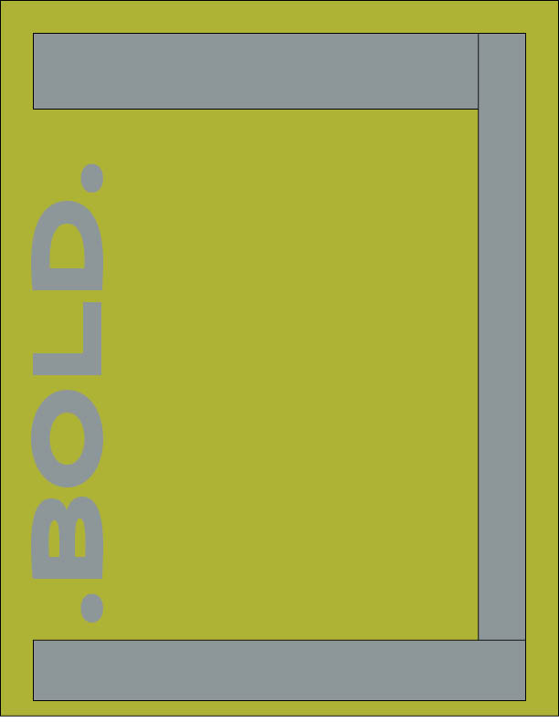
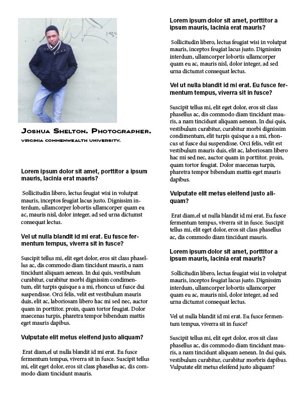
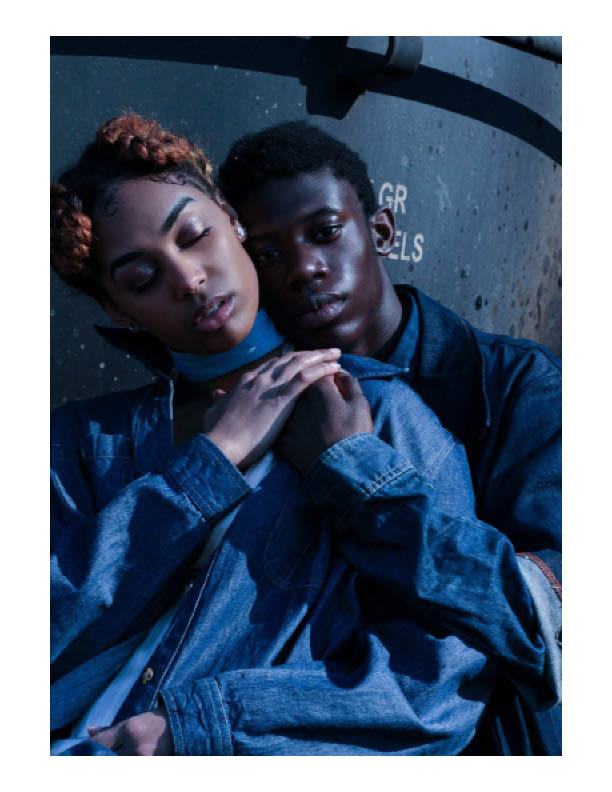
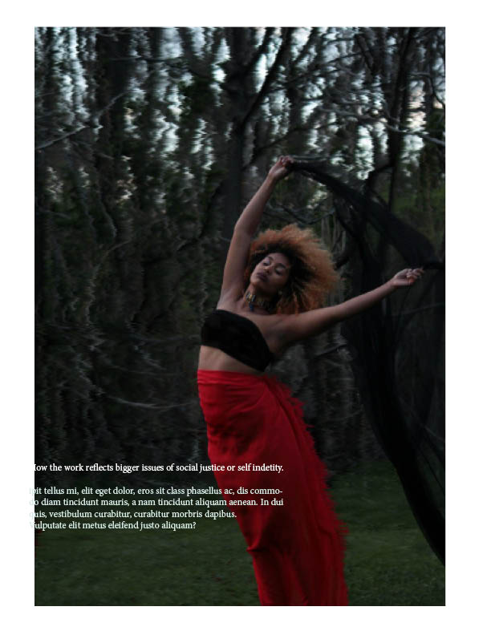

I am pleased to introduce our upcoming magazine, BOLD. BOLD will be a print publication that aims to showcases the work (whether it be writing, clothing/graphic designs or any form of artwork) of college students. Each issue will focus on colleges from a different state. Students will submit their work and a group of people from the publication will sort through the content and pick the best entries. In addition to publishing the artists’ work if chosen, we will also publish an interview (Q&A) style with the artists. We require that each artist include a narrative with their work (if it’s not an already written work) that explores topics of social/economic justice, curiosity, or self identity. Though our content will primarily from college artists, that is not solely our intended audience. As a matter of fact, our goal is to expose these up and coming creative to wide and versatile audience—an audience comprised of intellectuals, activists, and artists alike. Why is BOLD important? College stdudents posses some of the most creative and passionate minds. Often times, they have incredibly provocative work that is left unseen because they lack a platform to present their work. BOLD wants to show that being a passionate artist does not go in vain. We want to be a publication that inspires, and provoke discourse through the work of creative minds.
   